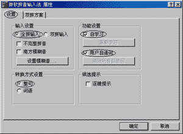
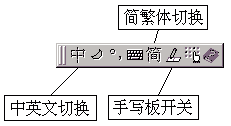
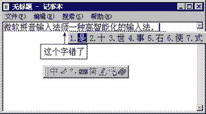
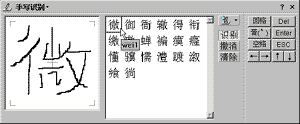

|
|
| 当前位置：电脑报电子版 > 1999 年 > 33 期 > 软件世界 > 学用微软拼音输入法2.0 |
| 《 学用微软拼音输入法2.0 》 |
| 微软拼音输入法是微软公司和哈尔滨工业大学联合开发的智能化拼音输入法，是一种以语句输入为特征的第三代输入法，它的10版和15版分别集成于Win95 OSR2和Win98。最新的2.0版集成在Office2000中文版中,也可从网上下载。微软拼音输入法20版由于增加了许多新的功能，安装程序达到7M之多。 一、 安装和设置  1.安装 微软拼音输入法2.0采用了更加方便的安装向导，并在向导中增加了卸载功能。用户可以根据向导的提示，将微软输入法设置为默认输入法。当电脑开机后，系统输入法就会由原来默认的“英语（美国）”，变为“微软拼音输入法2.0版”（在键盘语言/布局菜单中处于第一位），当运行英文软件，再自动切换到英文输入状态。 2.设置 微软拼音输入法2.0安装后的默认设置如图1。你可以单击微软拼音输入法状态条上的“功能设置”按钮（右起第二个），在快捷菜单中选择“属性”命令打开设置窗口。习惯以“智能ABC”方式输入词组的用户可将“不完整拼音”选项选中，南方口音较重的人可将“南方模糊音”项选中。2.0版增加了用户自行设置“南方模糊音”的功能，你只需单击图1中的“设置模糊音”按钮，即可打开“模糊音设置”对话框，按自己的读音习惯对模糊音进行设置。 微软拼音输入法2.0的一个重大改进是提供了一个可定制的双拼方案，即用户可定制韵母表。除系统提供的“微软拼音”双拼方案以外，用户还可以建立自己的双拼方案。你只需打开图1中的“双拼方案”选项卡，在模拟键盘中设置即可。 3.输入界面 进入微软拼音输入法后，屏幕左下角会出现一个输入法状态条，主要按钮功能可以参见图2。 二、中英文和符号输入 1.中文输入 微软拼音输入法2.0支持全拼或双拼输入方式（可在属性对话框中设置）。这两种输入方式都支持带音调、不带音调或二者的混合输入。输入法分别以数字键1，2，3，4代表拼音的四声，5代表轻声。输入的各汉字拼音之间无需用空格隔开，输入法能够自动分隔相邻汉字的拼音。如“这是”带音调输入为zhe4shi4，不带音调输入为zheshi。带音调拼音输入的字词准确率将高于不带音调的拼音输入。 微软拼音输入法20的输入结果为整句或词语（图3）。用微软拼音输入法输入一个词句时，可连续输入语句中各字的拼音，一个字的拼音输入结束不用敲空格或回车，待下一个字的第一个拼音输入，会自动将前一字的拼音转化为汉字。输入结果下面有一条下划线，表示当前句子还未经过确认，处于组字窗口的句内编辑状态。此时若发现句内有错字，应按左右方向键将光标移至错字前（候选窗口会自动弹出），按减号键或等号键（或单击候选窗口右端的翻页按钮）翻页，出现合适的字词后按数字键，即将输入错误或音字转换错误的字词替换掉。其中，候选窗口中蓝色（由输入法智能匹配）的字词可按空格键直接替换。整句输入、修改结束后需按Enter键加以确认。 2.符号和字母的输入 微软拼音输入法2.0提供了丰富的字母和符号输入方法。系统提供了12个不同的软键盘，用鼠标单击“功能设置”按钮，再从快捷菜单的“选软键盘”下级菜单中选择你需要的软键盘，即可用软键盘输入符号和特殊字母。 四、手写输入 微软拼音的手写识别引擎与市面上销售的各种输入手写笔不相上下。用微软输入法你可以使用鼠标直接在屏幕上书写，只要不是缺很多笔划，它都能识别出来。而且识别速度非常快。 单击状态条上的手写板图标即可出现如图4所示的手写板窗口。单击“清除”按钮清除手写区的内容。按住鼠标左键并拖动出笔划轨迹，放开左键就写完了一笔。 例如写一个“微”字，写好后在右侧候选字窗口内的第一个候选字就是。单击这个字即可将此字送出，此时手写区自动清空，等待下一个字的输入。 另外还有一种更方便的方法，可以省掉选字这个步骤。单击候选字窗口右侧的图标按钮，弹出一个菜单，从中选择“手写输入”选项，此时手写板的候选字窗口变成另外一个手写区。我们可以交替地在这两个手写区里写字，而系统会自动连续识别，这样就省去选字这个步骤了。如果用手写笔，汉字输入会非常快捷，而且适宜各种人使用。 看了上面的介绍，你是不是怦然心动了，那就赶快到ftp://ftp.download.com.cn/pub/chinese/mspy20.exe下载，不过7042KB的大家伙可要花去你的不少“银子”。 (新疆 张迎新 北京 助手工作室) |
| 下载本期推荐软件 | 页 首 |
| 《电脑报》版权所有，电脑报网站编辑部设计制作发布 |